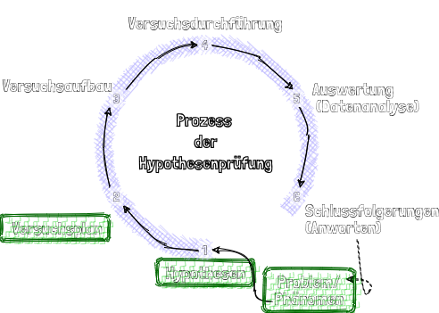
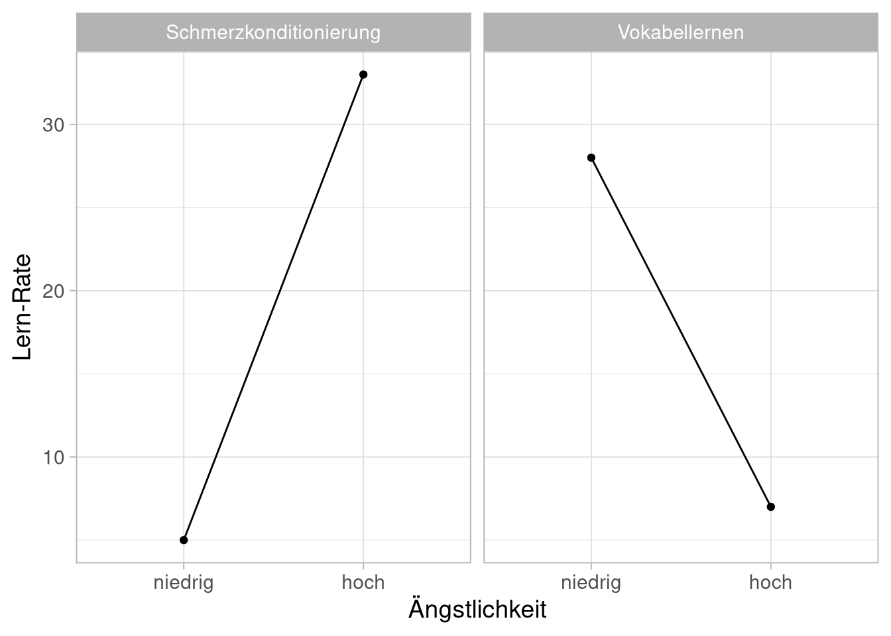
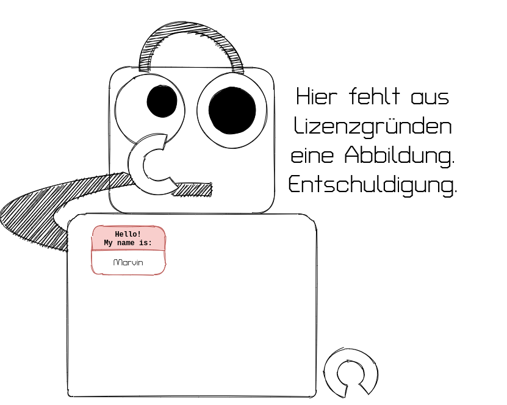
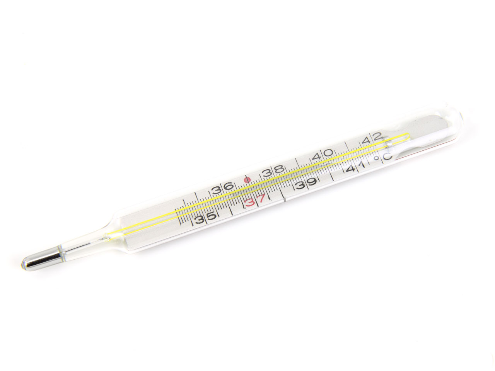
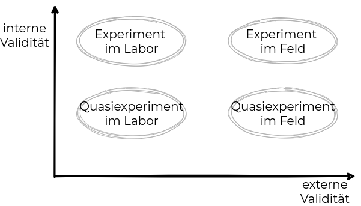

Operationalisieren und Messen
Organisatorisches
Semesterplan
| Sitzung | Datum | Sitzungstitel |
|---|---|---|
| 1 | 02.11.2020 | Warum wissenschaftliche Psychologie |
| 2 | 28.11.2020 29.11.2020 | Hypothesen und der Prozess der Hypothesenprüfung |
| 3 | 28.11.2020 29.11.2020 | Experimentelles Vorgehen |
| 4 | 28.11.2020 29.11.2020 | Literaturrecherche |
| 5 | 28.11.2020 29.11.2020 | Operationalisieren und Messen |
| 6 | 12.12.2020 13.12.2020 | Experimentelle Versuchspläne |
| 7 | 12.12.2020 13.12.2020 | Störvariablen im Experiment |
| 8 | 12.12.2020 13.12.2020 | Nicht-experimentelle Versuchspläne |
| 9 | 12.12.2020 13.12.2020 | Material und Stichprobe |
| 10 | 23.1.2021 24.1.2021 | Auswertung, Darstellung und Interpretation |
| 11 | 23.1.2021 24.1.2021 | Ethische Probleme im Versuch |
| 12 | 23.1.2021 24.1.2021 | Publikationsprozess |
| 13 | wird noch bekannt gegeben | Vorstellung der Gruppenarbeiten |
| 14 | wird noch bekannt gegeben | Klausurvorbereitung |
Wiederholung
Wozu überhaupt?

Theorie:
Überblick über bisherige Forschung verschaffen um:
Ein beobachtetes Phänomen in bestehende Theorien einzuordnen
Hypothesen über ein Phänomen abzuleiten
Nachzulesen welche Umsetzungsparameter für meine Studie vielversprechend sind
Operationalisierung
Operationalisierung:
Theoretische Konstrukte in beobachtbare Größe überführen
Beispiel: Welchen Einfluss hat Ängstlichkeit auf Lernen?

Hier unterscheidet sich die Operationalisierung der abhängigen Variable (Lernen). Die widersprüchlichen Ergebnisse zeigen, dass das Konstrukt Lernen nicht einheitlich ist und die Operationalisierungen verschiedene Aspekte dieses Konstruktes repräsentieren.
Operationalisierung = Definition der genauen Operationen (Handlungen), durch welche ein theoretisches Konstrukt durch Beobachtung, Zählung, Messung, etc. erfasst werden soll. Praktische Umsetzung des theoretischen Konstruktes
Ein theoretisches Konstrukt ist eine nicht direkt beobachtbare komplexe Variable, welche erst über beobachtbare Indikatoren operationalisiert und messbar gemacht werden muss.
Notwendigkeit theoretischer Vorarbeit: Das theoretische Konstrukt muss zunächst inhaltlich eindeutig definiert werden, um mögliche Indikatoren zu identifizieren und zu begründen, welche dann stellvertretend für das theoretische Konstrukt gemessen werden können.


Ein Beispiel: Wie entsteht Liebe?
Hypothese: Selbstöffnung führt zu interpersonaler Attraktion („Wenn man mit dem anderen über persönliche Dinge redet, verliebt man sich.“)
Was ist die unabhängige Variable?
Was ist die abhängige Variable?
Was sind wichtige Störvariablen?
Wie stellen wir die Ausprägungen dieser Variablen her (UV)?
Wie überführen wir diese Variablen (AV) in messbare Größen?
Wie kontrollieren/messen wir diese Variablen (SV)?
Beispiele bei Aron et al. (1997) und Sprecher, Treger, and Wondra (2013)
UV im Beispiel:

| Frage | |
|---|---|
| 1 | Given the choice of anyone in the world, whom would you want as a dinner guest? |
| 4 | What would you constitute a ‘perfect’ day for you? |
| 7 | Do you have a secret hunch about how you will die? |
| 16 | What do you value most in a friendship? |
| 17 | What is your most treasured memory? |
| 18 | What does friendship mean to you? |
| 20 | What, if anything, is too serious to be joked about? |
| 32 | Of all the people in your family, whose death woul you find most disturbing? Why? |
AV im Beispiel:
Abb. 9: ‘Inclusion of the Other in the Self’-Skala aus Aron, Aron, and Smollan (1992)
Güte von Operationalisierungen
(Qualitäts-)Merkmale von Operationalisierungen:
Divergenz: Ein theoretisches Konstrukt kann durch mehrere Indikatoren operationalisiert werden, wobei jeweils verschiedene Aspekte des Konstrukts unterschiedlich gut abgebildet werden.
Konvergenz : Ein empirischer Indikator operationalisiert gleichzeitig verschiedene Aspekte mehrerer Konstrukte, wobei manche besser abgebildet werden als andere.

(Qualitäts-)Merkmale von Operationalisierungen:
Sensitivität : „Empfindlichkeit“ mit der ein Indikator das gemeinte Konstrukt anzeigt, unabhängig davon ob er zusätzlich auch weitere Konstrukte anzeigt.
Selektivität/Spezifität : „Präzision“ mit der ein Indikator ausschließlich das gemeinte Konstrukt und nicht auch weitere Konstrukte anzeigt.
\(\rightarrow\) Eine Hypothese bewährt sich um so stärker, bzw. kann um so weiter generalisiert werden, je mehr unterschiedliche Operationalisierungen für ihre Kernkonstrukte verwendet werden. „Funktioniert“ nur eine bestimmte Operationalisierung ist oft fraglich welches Konstrukt eigentlich dahinter steht.
Sensitivität / Spezifität
| krank | nicht krank | |
| Test positiv | richtig positiv | falsch positiv |
| Test negativ | falsch negativ | richtig negativ |
Sensitivität\(:= \frac{richtig\hspace{1mm} positiv}{krank}\)
Spezifität\(:= \frac{richtig\hspace{1mm} negativ}{nicht \hspace{1mm} krank}\)
Exkurs klassische Testtheorie: Validität, Reliabilität, Objektivität
Die Begriffe Validität, Reliabilität und Objektivität nennt man die Hauptgütekriterien der klassischen Testtheorie.
Reliabilität: Sind meine Messergebnisse unabhängig von Störeinflüssen?
Validität: Messe ich das theoretische Konstrukt, das ich messen möchte?
Objektivität: Sind die Ergebnisse meines Messinstruments unabhängig von der Person, die es anwendet?
Validitäten bei Experimenten
Konstruktvalidität:
Gibt an, inwieweit UVn und AVn so operationalisiert sind, dass sie die jeweiligen psychologischen Konstrukte möglichst zutreffend repräsentieren und mit bestehenden Konstruktdefinitionen und Theorien übereinstimmen.
Inferenzstatistische Validität:
Gibt an, inwieweit die gewählten statistischen Verfahren geeignet sind, um von einer Stichprobe auf Variablen in der Population zu schließen (gefährdet bei Verletzung der Voraussetzungen)
Interne Validität:
Gibt an, inwieweit die Veränderungen der AV auf die Manipulation der UVn zurückgeführt und mögliche Alternativerklärungen durch Störeinflüsse ausgeschlossen werden können.
Externe Validität:
Gibt an, inwieweit die Untersuchungsergebnisse übertragbar (generalisierbar) sind von der Stichprobe auf die Population (Repräsentativität) von der Laborsituation auf natürliche Situationen (ökologische Validität)
Wie könnte man Intelligenz messen?
| niedrige Validität | hohe Validität | |
|---|---|---|
| hohe Reliabilität | 1  | |
| niedrige Reliabilität | 2 |
3

|
Validität in Experimenten

Operationalisierungsmethoden
Operationalisierung der UV
Externe Einflüsse / externe UV:
- Sind meist beobachtungsnah und lassen sich daher relativ leicht operationalisieren.
- Beispiele:
- „Lärm beeinflusst die Konzentrationsleistung.“
- „Die Luminanz des Hintergrundes beeinflusst die wahrgenommene Helligkeit des Objektes“
Interne psychologische Konstrukte / interne UVn:
- Sind meist beobachtungsfern und müssen aufwendiger und indirekter operationalisiert werden.
- Beispiele:
- „Motivation beeinflusst die Konzentrationsleistung.“
- „Das Vorwissen über ein Objekt beeinflusst seine wahrgenommene Helligkeit.“
Operationalisierung der UV
Konkret werden oft komplexe Versuchsanordnungen verwendet um bestimmte UV Stufen zu operationalisieren. Handelt es sich bei der UV um ein internes psychologisches Konstrukt, so kann dieses natürlich nur indirekt über die Auswirkung externer Manipulationen (und unter Annahme von Hilfshypothesen!) operationalisiert werden.
Hierzu werden Umgebungsbedingungen, Reize, Instruktionen, Aufgaben, etc. entsprechend variiert.
Operationalisierung der AV: Maße der Verhaltenswissenschaft (Psychologie)
Verhaltensbeobachtung: Das Verhalten der VP wird direkt beobachtet und für das Konstrukt relevantes Verhalten wird möglichst objektiv erfasst.
Befragung: Die VP antwortet mündlich (Interview) oder schriftlich (Fragebogen) auf ihr gestellte Fragen. Die Fragen können mehr (Ankreuzen, Ratingskalen) oder weniger (freies Antwortformat) strukturiert sein.
Test: Der VP werden unter standardisierten Bedingungen standardisierte Reize (Bilder, Töne, Aufgaben, etc.) vorgegeben, auf welche die VP reagieren muss (Benennen, Knopf drücken, komplexe Aufgabe lösen, etc.). Die Reaktionen können ggf. mit großen Normstichproben verglichen werden.
Analyse von Verhaltensspuren: Indirekte Spuren des Verhaltens der VP (Zeichnungen, Briefe, Fotos, Tagebücher, Nutzungsspuren, Cookies, Bewegungsprofile, etc.) werden ausgewertet.
Spezielle Mess- und Beobachtungsgeräte: z.B. Messung der Augenbewegungen, Fixationen, Sakkaden und Pupillenreaktionen mittels Eye-Tracking
Übung
Gibt’s im Olat
Literatur
Abbildung unter CC-0-Lizenz, Quelle: https://www.publicdomainpictures.net/en/view-image.php?image=3459&picture=thermometer↩︎
Abbildung unter CC-0-Lizenz, Quelle: https://www.pexels.com/de-de/foto/tier-grun-frosch-krote-35669↩︎
Abbildung unter CC-BY-NC-Lizenz, Quelle: https://xkcd.com/231/↩︎